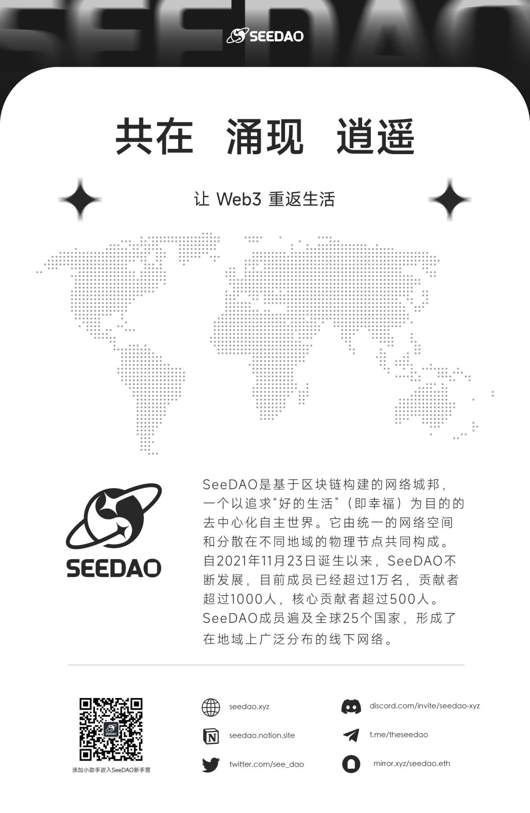

Hola 毛遂自荐, 加入SeeDAO打怪 组队搞事情
作者: SeeDAO
分类:
SeeDAO 新手营, DAO, Web3
来 Discord × Echo 毛遂自荐，主动遇见一起组队打怪的伙伴~

来Discord × Echo 毛遂自荐，主动遇见一起组队打怪的伙伴~
在 DAO 中，除过可通过SeeDAO App里的「悬赏酒馆」认领任务，也可化被动为主动以更快加入项目的方式 毛遂自荐：通过自我介绍，链接正在寻找队员的项目负责人、遇见希望一起组队打怪的伙伴~悬赏酒馆：https://app.seedao.xyz/hub为了创造一个这样人才流动的空间，SeeDAO Discord 刚刚发布了【毛遂自荐】频道。如果你做好主动出击准备，可以进入Discord 毛遂自荐，创建一个新帖子，发布一份详细的自我介绍。你可以主动把这个帖子当作你在 SeeDAO 中的简历，转发给你希望结识的项目负责人，也可以等待有意思的伙伴来联系你！Good Luck~✨毛遂自荐：https://discord.com/channels/841189467128594442/1188037426845855754
5.希望寻找的项目/团队类型 & 希望认识怎样的伙伴更有趣的是：除了文字，我们还有很棒的DAO tools — echo
Web3语音趣缘圈子，一个聚焦生活&文化的地方。有许多有趣话题，SeeDAO 成员在 echo 上都可以找到语音或文字交流，产生共鸣的机会。你可以在 Echo 上发布一篇声音介绍简历，并将链接附在你的 Discord 帖子中，让大家能够更直观地认识你！Echo: https://echo3.world/home
在echo星球发布声音版【毛遂自荐】，可以获得200积分奖励!（评论区留下钱包地址，季度末空投至大家的钱包）
如果你报名了 S5 SeeDAO 共建者营，在【毛遂自荐】频道发布个人介绍贴，还会有 500 SeeDAO 积分的额外奖励！报名方式：添加 SeeDAO 新人小助手微信，注册 SNS （SeeDAO 身份 ID）即可报名！PS：本项额外积分悬赏开放给所有 SeeDAO 积分持有量低于 5000 的伙伴~
内容来源 | 定慧x大凡x文倩
排版 | 小空
审核 | T1NG
